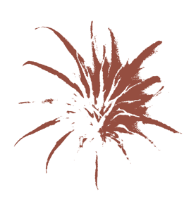

Motto
“V umění lze mísit všechny styly, ale směs musí mít styl.”
Gabriel Laub
“Sterilní, uniformní, dokonce letargické “less is more” (“méně je více”)
nahradíme “less is bore” (“méně je nuda”)
Robert Venturi
“Český minimalismus v interiéru způsobuje duševní poruchy.”
Barbora Kališová
